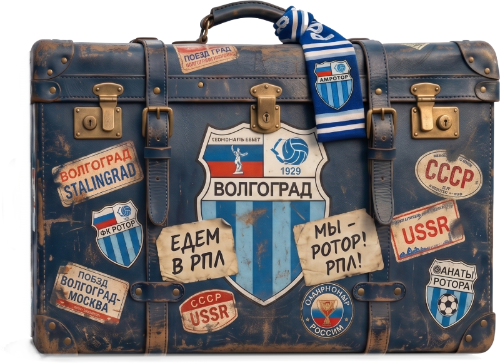

№ 1 / 5

щёлкните оба замка
Баннер на первый домашний матч сезона
На первом домашнем матче сезона выставляем большой баннер с текстом:
«Я болел за Ротор, когда он ещё был во Второй лиге».
Каждый желающий вписывает своё имя и дату начала боления — прямо у баннера, маркером.
В соцсетях подаём заранее, в стиле «стань частью истории». На стадион приходишь с заготовленной фразой, на выходе у тебя — селфи на фоне своего имени.
После матча баннер забираем. Можно заюзать как фон в фан-шопах или просто сложить и сохранить для архива клуба.
Бонус: те, кто впишет себя в первом году, через 5 лет смогут показать фотку и сказать «я там был». Это и есть длинная история.
Стенд в фан-зоне · каждый домашний матч
Шарф Ротора — то, что не выбрасывают. И тем, что лежит у тебя 30 лет, очень хочется похвастаться. Даём такую возможность.
В фан-зоне — стенд. Приходишь со своим самым старым шарфом, тебе на куртку клеят наклейку с рангом. Ранги — через механику ротора. Чем старее шарф, тем выше:
Отдельный ранг — «Я был на МЮ». Для тех, кто был в 1995-м. Не проверяем — у таких людей всегда есть истории.
«К концу сезона у завсегдатаев — стена нашивок на куртке. И повод подходить к незнакомым».
Один сотрудник на стенде, шесть видов наклеек, очередь сама собой.
Памятное кресло · постоянный экспонат трибуны
Одно кресло на трибуне выделяется краской клубных цветов. Под номером кресла — маленькая табличка с именем.
Тихо, без пафосных церемоний. Не освещаем, пока само не разлетится вирусно.
«Такие вещи люди любят и замечают сами».
А как только заметят — тогда уже и подключаемся. Но это уже совсем другая активация…
Рисованные портреты игроков · весь сезон + финальная выставка
На трибунах Ротора живёт штука, которой почти нет у других клубов: рисованные портреты игроков. Дети, подростки, девушки — приходят с постерами, прорисованными по пять часов фломастером.
Это уже есть. Надо просто поставить рамки.
Каждый матч SMM выбирает лучший портрет. Клуб печатает его в полный рост и вешает в фан-зоне на следующий матч — с подписью художника.
В финале сезона — физическая выставка «Ротор глазами трибуны». Все портреты за год, открытый доступ перед последним матчем.
«Сафронов уже сам брал чужой плакат и фотографировался с ним. Узаконьте это».
Сезонная тематика · 8 домашних = 8 районов
Ровно столько районов в городе, сколько домашних матчей в сезоне (до перерыва). Совпадение — дар.
Подсвечиваем тематику района: коммуникация в соцсетях перед матчем, активации в фан-зоне, может даже выход и объявление игроков под него.
У нас каждый район колоритный, есть куда покопать. Фанаты из каждого района будут очень довольны.
«Заземлённость и связь с городом. За это всегда респектуют».